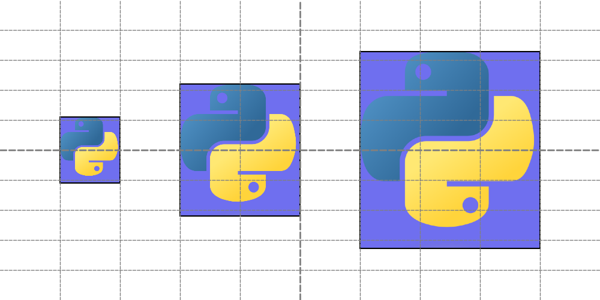
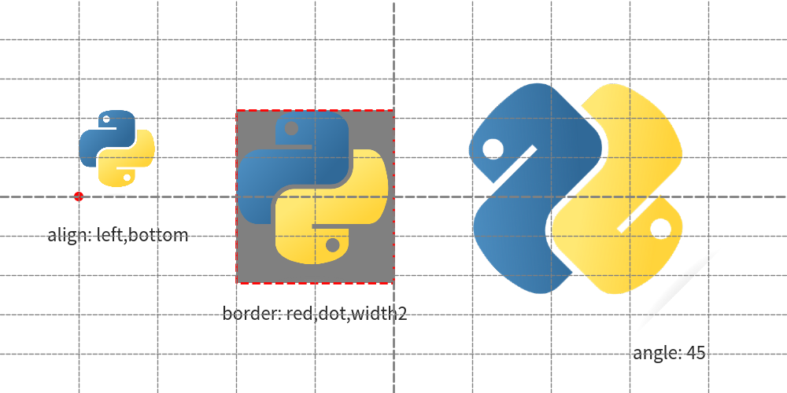
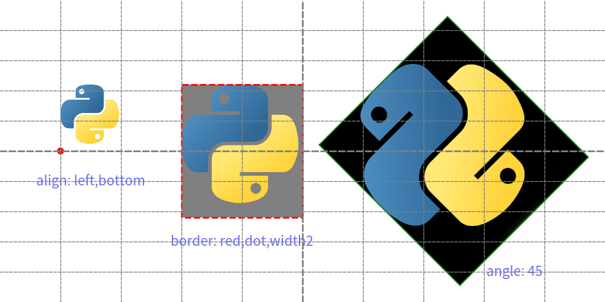
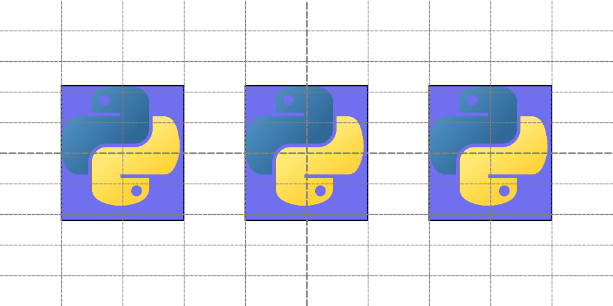

===============
Drawing Image
Drawlib utilizes the image() function for drawing images.
You can specify:
- Coordinate
- Size
- Image source (file path string, Dimage, PIL.Image.Image)
- Angle
- Styling options
In this document, we'll begin with the basics of the image() function, followed by explanations of styling and different types of original image data.
image()
The image() function accepts the following arguments:
- xy: Coordinates specifying the position of the image.
- width: Width of the image.
- image: Source of the image, which can be a file path string, Dimage object, or PIL.Image.Image object.
- angle: Rotation angle of the image (optional).
- style: Styling information, either as a string name or a Style object.
Coordinates and alignment work similarly to other drawing elements. Let's start with an example:
from drawlib.canvas import config, save
from drawlib.images import image
config(width=100, height=50, grid_only=True)
image(xy=(15, 25), width=10, image="python.png")
image(xy=(40, 25), width=20, image="python.png")
image(xy=(75, 25), width=30, image="python.png")
save()

Executing this code generates the following output:
from drawlib.canvas import config, save
from drawlib.images import image
config(width=100, height=50, grid_only=True)
image(xy=(15, 25), width=10, image="python.png")
image(xy=(40, 25), width=20, image="python.png")
image(xy=(75, 25), width=30, image="python.png")
save()

image1.png
By default, the xy coordinates position the center of the image.
Style for Images
Images can be styled using the Style class, which includes:
text_halign: Horizontal Aligntext_valign: Vertical Alignline_width: Border line widthline_color: Border line colorline_style: Border line stylefill_color: Fill color for transparent part
Let's check image styling with example. Here is a code which specify stylings.
from drawlib.canvas import config, save
from drawlib.colors import Colors
from drawlib.images import image
from drawlib.shapes import circle
from drawlib.text import text
from drawlib.types import Style
config(width=100, height=50, grid_only=True)
image(
xy=(10, 25),
width=10,
image="python.png",
style=Style(text_halign="left", text_valign="bottom"),
)
circle((10, 25), radius=0.5, style=Style(fill_color=Colors.Red, line_color=Colors.Red))
text((15, 20), "align: left,bottom")
image(
xy=(40, 25),
width=20,
image="python.png",
style=Style(line_width=2, line_style="dashed", line_color=Colors.Red, fill_color=Colors.Gray),
)
text((40, 10), "border: red,dot,width2")
image(xy=(75, 25), width=30, image="python.png", angle=45, style="green_solid")
text((85, 5), "angle: 45")
save()

The first image changes alignment. Default alignment is center,center, but left,bottom might be useful sometimes.
Changing image border line and add color for transparent part at 2nd example. Default is no border, no fill.
The 3rd example changes angle of image.
With specifying theme's style "green_solid".
Executing code generates this output.
from drawlib.canvas import config, save
from drawlib.colors import Colors
from drawlib.images import image
from drawlib.shapes import circle
from drawlib.text import text
from drawlib.types import Style
config(width=100, height=50, grid_only=True)
image(
xy=(10, 25),
width=10,
image="python.png",
style=Style(text_halign="left", text_valign="bottom"),
)
circle((10, 25), radius=0.5, style=Style(fill_color=Colors.Red, line_color=Colors.Red))
text((15, 20), "align: left,bottom")
image(
xy=(40, 25),
width=20,
image="python.png",
style=Style(line_width=2, line_style="dashed", line_color=Colors.Red, fill_color=Colors.Gray),
)
text((40, 10), "border: red,dot,width2")
image(xy=(75, 25), width=30, image="python.png", angle=45, style="green_solid")
text((85, 5), "angle: 45")
save()

image with styles
Styling an image with Style allows adjustments such as alignment changes, border customization, and rotation.
Passing image objects
While file paths are commonly used, image() also accepts the following image objects:
Dimage: Drawlib's image utility class.
PIL.Image.Image: Images from the PIL (Pillow) library.
Here's an example demonstrating how to use these objects:
import PIL.Image
from drawlib._core.l2_models_._dimage import Dimage
from drawlib._utils import dutil_script
from drawlib.canvas import config, save
from drawlib.images import image
file_path = dutil_script.get_relative_path("python.png")
print(file_path)
# /Users/yuichi/GitHub/drawlib_docs/v0_1/docs/source/manual/foundations/image/python.png
config(width=100, height=50, grid_only=True)
# specify file
image(xy=(20, 25), width=20, image="python.png")
# specify Dimage
dimage = Dimage("python.png")
image(xy=(50, 25), width=20, image=dimage)
# specify PIL Image
pil_image = PIL.Image.open(file_path)
image(xy=(80, 25), width=20, image=pil_image)
save()

Both instances are passed to arg image.
Function image() will handle them correctly.
Both instances are passed to the image argument, and image() handles them correctly.
We utilize dutil_script.get_relative_path() to ensure correct file paths.
Drawlib functions always interpret paths relative to the script's location.
But PIL function doesn't.
This utility function adjusts the path rule to match drawlib's conventions.
import PIL.Image
from drawlib._core.l2_models_._dimage import Dimage
from drawlib._utils import dutil_script
from drawlib.canvas import config, save
from drawlib.images import image
file_path = dutil_script.get_relative_path("python.png")
print(file_path)
# /Users/yuichi/GitHub/drawlib_docs/v0_1/docs/source/manual/foundations/image/python.png
config(width=100, height=50, grid_only=True)
# specify file
image(xy=(20, 25), width=20, image="python.png")
# specify Dimage
dimage = Dimage("python.png")
image(xy=(50, 25), width=20, image=dimage)
# specify PIL Image
pil_image = PIL.Image.open(file_path)
image(xy=(80, 25), width=20, image=pil_image)
save()

image3.png
As shown, all three approaches yield the same drawing output. Dimage and PIL.Image.Image are particularly useful when applying effects to images or manipulating them programmatically.
© 2026 drawlib by Yuichi Ito. Released under the Apache 2.0 License.